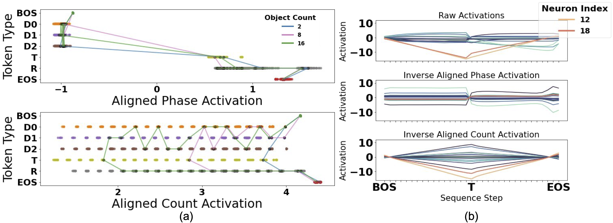
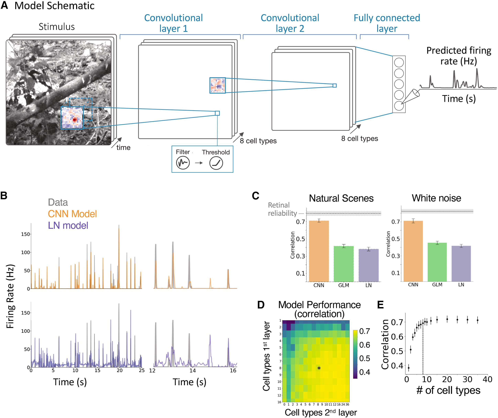
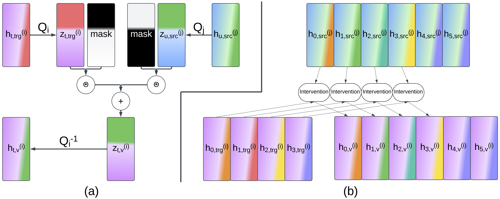
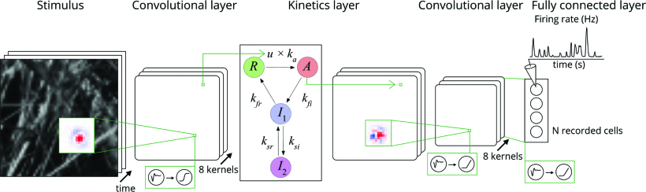
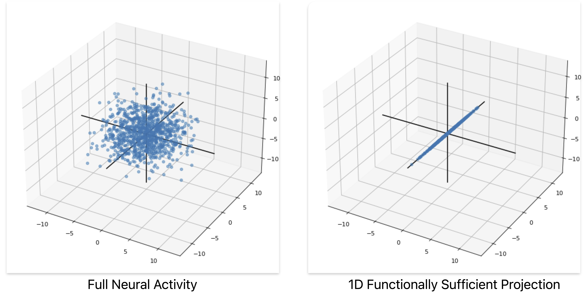
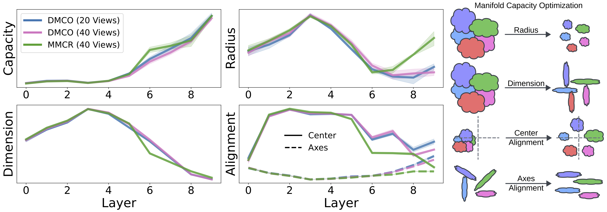
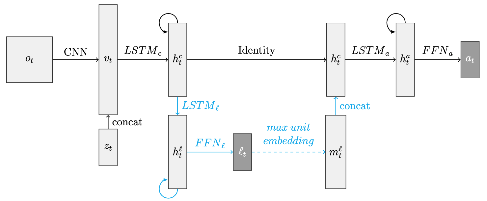
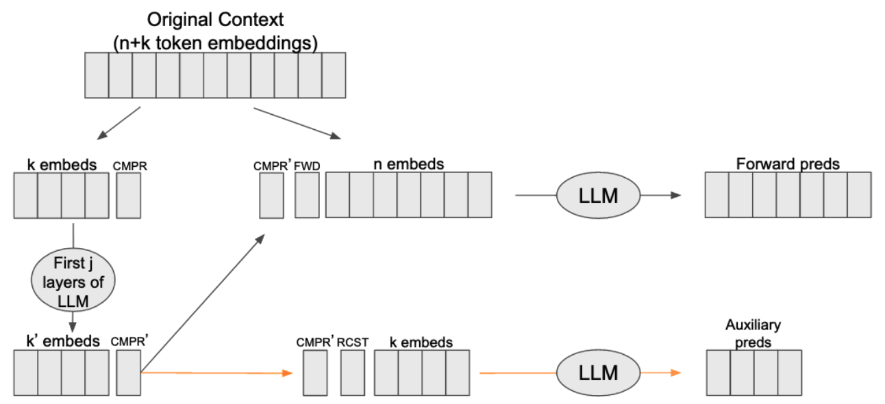
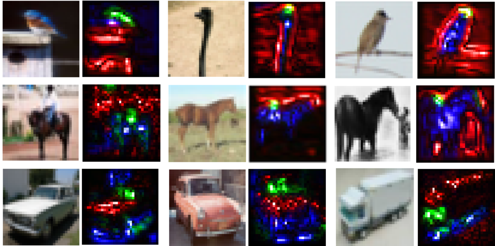
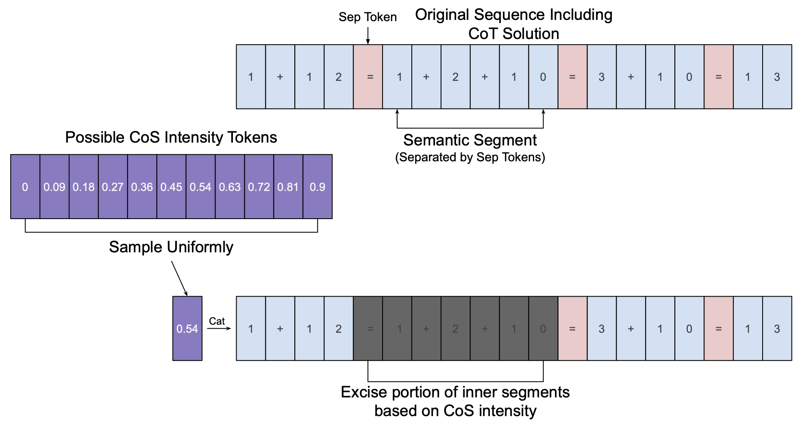

About Me
I'm currently a 5th year PhD candidate at Stanford
studying cognitive/neural interpretability in
Jay McClelland's
lab. My research tends to be a blend of Cognitive Psychology,
Neuroscience, and Computer Science. My most
recent research has focused on interpretability and
alignment methods, number cognition, and visual processing.
I use this site to host my CV, list my publications,
and share some of my ongoing projects.
I list a number of projects on this site that
are promising/interesting but probably won't be published.
These projects may find themselves here because they're
at a reasonable state, but I can't find the time to
pursue them further, or someone else beat me to the punch.
Note that the date near the beginning of each
entry refers to the date that the linked writeup was
pushed to github or published. This is not
necessarily the date that the blog entry was made!
Featured Work
 Date Submitted:
Date Submitted: Sept 19, 2025
Journal/Venue: Accepted to ICLR 2026
Satchel Grant, Simon Jerome Han, Alexa Tartaglini, Christopher Potts
Abstract:
A common approach to mechanistic interpretability is to
causally manipulate model representations via targeted
interventions in order to understand what those
representations encode. Here we ask whether such
interventions create out-of-distribution (divergent)
representations, and whether this raises concerns about
how faithful their resulting explanations are to the target
model in its natural state. First, we demonstrate
theoretically and empirically that common causal
intervention techniques often do shift internal
representations away from the natural distribution of
the target model. Then, we provide a theoretical analysis
of two cases of such divergences: "harmless" divergences
that occur in the behavioral null-space of the layer(s) of
interest, and "pernicious" divergences that activate
hidden network pathways and cause dormant behavioral
changes. Finally, in an effort to mitigate the
pernicious cases, we apply and modify the Counterfactual
Latent (CL) loss from
Grant (2025)
allowing representations from causal interventions to remain
closer to the natural distribution, reducing the likelihood
of harmful divergences while preserving the interpretive
power of the interventions. Together, these results highlight
a path towards more reliable interpretability methods.
This manuscript is the continuation of the
Control and Predictivity in Neural Interpretability
manuscript accepted to the MechInterp Workshop at NeurIPS 2025.
This project helped me a lot in understanding the nuances
of causal interventions, and in understanding just how complex
neural network functional landscapes can be. A part of me
feels pessimistic about the future of neuron-level or
subspace-level interpretability, but I'm hopeful for the
future of neural network analysis more broadly. And, from
a pragmatic perspective, things are as bright as ever for
neural networks.

Date Submitted: February, 2024
Journal/Venue: TMLR 2025
Satchel Grant, Noah D. Goodman, James L. McClelland
Abstract:
What types of numeric representations emerge in neural systems, and
what would a satisfying answer to this question look like?
In this work, we interpret Neural Network (NN) solutions to sequence
based number tasks through a variety of methods in an effort to
understand how well we can interpret NNs through the lens of interpretable Symbolic
Algorithms (SAs)––defined by precise, abstract, mutable variables
used to perform computations. We use GRUs, LSTMs, and Transformers trained using
Next Token Prediction (NTP) on numeric tasks where the solutions
to the tasks vary in length and depend on numeric information only latent in
the task structure.
We show through multiple causal and theoretical methods that we can interpret
NN's raw activity through the lens of simplified SAs when we frame the neural
activity in terms of interpretable subspaces rather than individual neurons.
Depending on the analysis, however, these interpretations can be graded, existing
on a continuum, highlighting the philosophical quandry of what it means to
"interpret" neural activity. We use this to motivate the introduction of Alignment
Functions: invertible, learnable functions that add flexibility to the
existing Distributed Alignment Search (DAS) framework.
Through our specific analyses we show the importance of causal interventions
for NN interpretability; we show that recurrent models
develop graded, symbol-like number variables within their neural activity;
we introduce Alignment Functions to frame NN activity in terms of general,
invertible functions of interpretable variables; and we show that Transformers must
use anti-Markovian solutions---solutions that avoid using cumulative, Markovian
hidden states---in the absence of sufficient attention layers. We use our
results to encourage NN interpretability at the level of neural subspaces
through the lens of SAs.
I must admit that I'm proud of this work. It provides a satisfying
answer to a question that has motivated a lot of my research:
what does it mean to "understand the brain"? We provide the notion of
Alignment Functions, which are invertible, learnable functions that
establish an explicit relationship between neural activity and
interpretable, understandable variables. I don't state this in the
paper, but a nice definition of "understanding a concept" is the
ability form that new concept in terms of a system of concepts that
you already accept to be true. Alignment functions provide a way to
learn such a relationship for neural activity.

Date Published: Sept. 6, 2023
Journal/Venue: Neuron
Niru Maheswaranathan*, Lane T McIntosh*, Hidenori Tanaka*, Satchel Grant*,
David B Kastner, Joshua B Melander, Aran Nayebi, Luke E Brezovec,
Julia H Wang, Surya Ganguli, Stephen A Baccus
Abstract:
Understanding the circuit mechanisms of the visual code for
natural scenes is a central goal of sensory neuroscience. We show
that a three-layer network model predicts retinal natural scene
responses with an accuracy nearing experimental limits. The
model’s internal structure is interpretable, as interneurons
recorded separately and not modeled directly are highly
correlated with model interneurons. Models fitted only to
natural scenes reproduce a diverse set of phenomena related
to motion encoding, adaptation, and predictive coding,
establishing their ethological relevance to natural visual
computation. A new approach decomposes the computations of
model ganglion cells into the contributions of model
interneurons, allowing automatic generation of new hypotheses
for how interneurons with different spatiotemporal responses
are combined to generate retinal computations, including
predictive phenomena currently lacking an explanation.
Our results demonstrate a unified and general approach to
study the circuit mechanisms of ethological retinal
computations under natural visual scenes.
This was a big collaboration over the course of many years.
I love this work because it is a beautiful demonstration
of how to establish an isomorphism between biological and artificial
neural networks, and it shows how you can use that sort
of model for interpreting the real biological
neural code. I am a co-first author on this work for writing
most of the project code, developing many architectural improvements,
and developing much of the interneuron comparisons.

Date Published: January 10, 2025
Journal/Venue: ICLR ReAlign Workshop 2025 (and under review at TMLR 2025)
Satchel Grant
Abstract:
When can we say that two neural systems are the same? What nuances do we miss when we fail to causally probe the representations of the systems? In this work, we introduce a method for connecting neural representational similarity to behavior through causal interventions. The method learns transformations that find an aligned subspace in which behavioral information can be interchanged between multiple distributed networks' representations. We first show that the method can be used to transfer the behavior from one frozen Neural Network (NN) to another in a manner similar to model stitching, and we show how the method can differ from correlative similarity measures like Representational Similarity Analysis. Next, we empirically and theoretically show how the method can be equivalent to model stitching when desired, or it can take a form that has a more restrictive focus to shared causal information; in both forms, it reduces the number of required matrices for a comparison of n models to be linear in n. We then present a case study on number-related tasks showing that the method can be used to examine specific subtypes of causal information, and we present another case study showing that the method can reveal toxicity in fine-tuned DeepSeek-r1-Qwen-1.5B models. Lastly, we show how to augment the loss with a counterfactual latent auxiliary objective to improve causal relevance when one of the two networks is causally inaccessible (as is often the case in comparisons with biological networks). We use our results to encourage the use of causal methods in neural similarity analyses and to suggest future explorations of network similarity methodology for model misalignment.
This is a followup to the Emergent Symbol-like Number Variables paper
that allows us to causally compare representations between
multiple neural systems and allows us to get closer to performing
a DAS-like method on human brains. I feel the need to clarify that
the sole-authorship was with the approval of my advisor, Jay McClelland.
I offered for him to be a co-author, but he felt that he had not
contributed enough to justify authorship (in part due to his stretched
schedule). He is an extremely supportive advisor, and I am grateful for
both the guidance and freedom that he has granted me. Similarly for Noah Goodman,
who has been a great mentor and collaborator on the Emergent Symbol-like
Number Variables paper, but who could not find the time to
contribute to this work.

Date Published: March 4, 2022
Journal/Venue: Asilomar
Xuehao Ding, Dongsoo Lee, Satchel Grant, Heike Stein, Lane McIntosh, Niru Maheswaranathan, Stephen Baccus
Abstract:
The visual system processes stimuli over a wide range of
spatiotemporal scales, with individual neurons receiving
input from tens of thousands of neurons whose dynamics
range from milliseconds to tens of seconds. This poses a
challenge to create models that both accurately capture visual
computations and are mechanistically interpretable. Here we
present a model of salamander retinal ganglion cell spiking
responses recorded with a multielectrode array that captures
natural scene responses and slow adaptive dynamics. The model
consists of a three-layer convolutional neural network (CNN)
modified to include local recurrent synaptic dynamics taken
from a linear-nonlinear-kinetic (LNK) model. We presented
alternating natural scenes and uniform field white noise
stimuli designed to engage slow contrast adaptation. To overcome
difficulties fitting slow and fast dynamics together, we
first optimized all fast spatiotemporal parameters, then
separately optimized recurrent slow synaptic parameters. The
resulting full model reproduces a wide range of retinal
computations and is mechanistically interpretable, having
internal units that correspond to retinal interneurons with
biophysically modeled synapses. This model allows us to
study the contribution of model units to any retinal computation,
and examine how long-term adaptation changes the retinal neural
code for natural scenes through selective adaptation of
retinal pathways.
This project was a good extension of the CNN retinal model
that I listed earlier. In this work, we managed to give
the CNN model recurrence and used previous kinetics constants
to get the model to exhibit slow adaptation (something
that was lacking from the previous work).
 Date Accepted:
Date Accepted: Sept 24, 2025
Journal/Venue: MechInterp Workshop NeurIPS 2025
Satchel Grant, Alexa Tartaglini
Abstract:
For the goals of mechanistic interpretability, correlational methods
are typically easy to scale and use, and can provide strong predictivity
of Neural Network (NN) representations. However, they can lack causal
fidelity which can limit their relevance to NN computation and behavior.
Alternatively, causal approaches can offer strong behavioral control via
targeted interventions, making them superior for understanding
computational cause and effect. However, what if causal methods use
out-of-distribution representations to produce their effects? Does this
raise concerns about the faithfulness of the claims that can be made
about the NN's native computations? In this work, we explore this
possibility of this representational divergence. We ask to what degree
do causally intervened representations diverge from the native
distribution, and in what situations is this divergence acceptable?
Using Distributed Alignment Search (DAS) as a case study, we first
demonstrate the existence of causally intervened representational
divergence in interventions that provide strong behavioral control, and
we show that stronger behavioral control can correlate with more divergent
intervened representations. We then provide a theoretical discussion showing
sufficient ways for this divergence to occur in both innocuous and
potentially pernicious ways. We then provide a theoretical demonstration
that causal interventions typically assume principles of additivity,
calling into question the use of nonlinear methods for causal manipulations.
Lastly, for cases in which representational divergence is undesirable, we
demonstrate how to incorporate a counterfactual latent loss to constrain
intervened representations to remain closer to the native distribution.
Together, we
use our results to suggest that although causal methods are superior for
most interpretability goals, a complete account of NN representations
balances computational control with neural predictivity, with the optimal
weighting depending on the goals of the research.
This particular writeup was accepted to the mech interp workshop at NeurIPS 2025.
This is onlgoing work, however, and it will become an ICLR 2026
submission with expanded focus on causal interventions in general.

Date Accepted: Sept 24, 2025
Journal/Venue: CogInterp NeurIPS Workshop 2025
Satchel Grant
Abstract:
Many neural interpretability methods attempt to decompose Neural
Network (NN) activity into vector directions or features along
which variability serves to represent some interpretable aspect
of how the NN performs its computations. In correlative analyses,
these features can be used to classify what inputs and outputs
correlate with changes in the feature; in casual analyses, these
features can be used to causally influence computation and behavior.
In both cases, it is easy to view these features as satisfying as
ways to interpret NN activity. What if each feature, however,
is an incomplete part of the story? For any given feature, is
it necessary for the NN's computations, or is it only sufficient?
In this work, we present a method for isolating Functionally
Sufficient Projections (FSPs) in NN latent vectors, and we use
a synthetic case study on MultiLayer Perceptrons (MLPs) to find
that multiple, mutually orthogonal FSPs can produce the same
behavior. We use the results of this work as a cautionary tale
about claims of neural necessity.
Unpublished Projects

Date: October 9, 2024
Satchel Grant, Chi-Ning Chou, Thomas Edward Yerxa, SueYeon Chung
Abstract:
Manifold capacity is a tool for interpreting artificial
and biological neural representations. Although the technique has
shown utility in many analyses, an open question remains about
whether the theory can also be used as a training objective for
useful/robust neural representations.
Previous work has made progress towards this goal
in self-supervised learning settings by making assumptions
about the shape of the manifolds. In this work, we use
differentiable quadratic programming to maximize manifold
capacity directly, without using simplifying assumptions.
We show that our technique can match the overall performance of
the pre-existing baselines with the ability to tune a hyperparameter
to minimize the cumulative gradient steps or the total
training samples.
Our results show promise for exploring domains less suited to
pre-existing simplifying assumptions, and our results add to
the mounting evidence of manifold capacity as a powerful
tool for characterizing neural representations.
This is ongoing work that will soon be submitted to a workshop.

Date Released: Dec 6, 2023
Satchel Grant, James L. McClelland
Abstract:
We explore the role of language in cognition within the domain of number,
revisiting a debate on the role of exact count words in numeric matching
tasks. To address these issues, we introduce a virtual environment to simulate
exact equivalence tasks like those used to study the numerical abilities
of members of the Pirah˜a tribe, who lack exact number words, in previous
works. We use recurrent neural networks to model visuospatially grounded
counting behavior with and without the influence of exact number words.
We find that it is possible for networks to learn to perform exact numeric
matching tasks correctly up to non-trivial quantities with and without the
use of exact number words. Importantly, however, networks with limited
counting experience with and without language capture the approximate behavior
exhibited by adult members of the Pirah˜a and young children learning
to count in cultures with number words. Our networks also exhibit aspects of
human numerical cognition purely through learning to solve the tasks: a flat
coefficient of variation and a compressed mental number representation. We
explore the causal influences of language and actions, showing that number
words decrease the amount of experience needed to learn the numeric matching
tasks, and learning the task actions reduces experience needed to learn
number words. We use these results as a proof of principle for expanding
our understanding of number cognition, and we suggest refinement to our
collective understanding of the interactions between language and thought.
This is ongoing work that will soon be submitted to Cognition.
Date Released: May 31, 2023

Abstract: Large Language Models (LLMs) have demonstrated
remarkable performance on a wide range of
language modeling tasks. LLMs have also demonstrated an ability to learn new tasks
from clever prompt sequences, without the need for gradient updates. The length of
an LLM's context window, however, has quadratic computational complexity, making
large context windows prohibitively expensive. Furthermore, a problem with LLMs as
models of cognition is their perfect memory for tokens within their context window,
and their non-existant memory for things outside of their context window in the absence
of weight updates. To address the challenges of large context windows, we introduce a
technique that uses pretrained LLMs to create compressed, representations of
sub-sequences within the context. We introduce a new token type that can be trained to
compress a history of tokens at inference without additional gradient updates after training.
These tokens serve to increase the context size while taking a step toward aligning LLMs
with human stimulus abstraction. We use this technique to augment the open source Bloom
models, and we show that the compressed representations can recover ~80\% of the
performance of the LLMs using the full context.
I never submitted this to any conferences because it ended up being
very similar to Jesse Mu's work,
Learning to Compress Prompts with Gist Tokens.
Then Alexis Chevalier et. al. published
Adapting Language Models to Compress Contexts
that does the exact same idea. Chevalier et. al. managed
to scale things up very nicely, and had seemingly good results.

Date Submitted: Dec, 2022 (hosted online Jul 1, 2022)
Abstract: There have been many recent
breakthroughs in self-
supervised learning (SSL), i.e. unsupervised techniques
used to obtain general purpose image features for down-
stream tasks. However, these methods often require large
amounts of computational resources, and much is still unknown
about how architectural choices affect the quality
of self-supervised learned representations. There is still a
lack of understanding of why compositional features spontaneously
arise in previous self-supervised publications. In
this work, we propose a class of models that is reminiscent of an
ensemble. We show how this class of models can
greatly reduce the number of parameters needed for learning
robust representations in a self-supervised setting. Additionally,
we show that sparsely connected network pathways spontaneously
create decomposed representations.
In this work, we imposed network pathway grouping on a simple CNN architecture
and found that different isolated subpathways would spontaneously learn
distinct features of the training data. We also showed that this grouped pathway
architecture had performance benefits over vanilla variants when holding
parameter counts constant. We also made a poster
here.
I think this work was great, but we struggled with our message and audience.
It was a project for Stanford's
Computer Vision course
so we attempted to frame the project as an architectural
contribution, validating the representations on a
performance benchmark (CIFAR10 image classification).
I think the project is more interesting, however, for
its qualtitative findings about learned representations.
I still think this work has promise, but I'm not
familiar with the greater literature. And since we
completed this project, I think there has been
some good theory work that could potentially explain
our findings in terms of a
Neural Race Reduction.

Date Released: Dec 6, 2023
Abstract:
Large Language Models (LLMs) have demonstrated remarkable language modeling
and sequence modeling capabilities with capabilities like In-Context Learning
(ICL) and Chain of Thought (CoT) reasoning, akin to human working memory and
reasoning. Drawing inspiration from dual process theory in human cognition, we
propose a novel training technique called Chain of Shortcuts (CoS) that bridges
the gap between LLMs’ System 1 (automatic) and System 2 (deliberate) modes.
CoS enables LLMs to compress reasoning trajectories, encouraging associations
between earlier and later steps in problem-solving, resulting in shorter, more
flexible solutions. We demonstrate that CoS-trained language models maintain or
outperform baseline models while generating distilled problem solutions, enhancing
stability during training, and excelling in high-temperature environments. CoS’s
effectiveness increases with the number of transformer layers until saturation. Our
work not only contributes to mathematical transformers but also offers insights
into human dual process theory, paving the way for more efficient and robust AI
systems.
Overall, this project's direction no longer seems promising as a longterm focus 😢
Another paper called GPT Can Solve Mathematical Problems Without a Calculator
came out in September that essentially does what we were moving towards in terms of a Computer Science contribution.
And the cognitive focus of this work is probably too abstract to be much of a contribution.
This writeup was intended to be a NeurIPS workshop submission, but due to the reasons mentioned
above, combined with a misinterpretation of the workshop deadline (12AM vs 12PM 😅), it was never
submitted (and probably never will be).